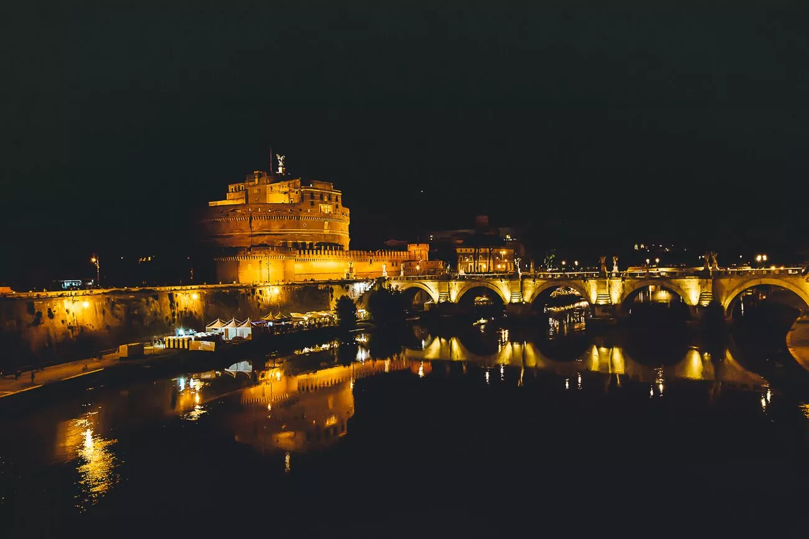
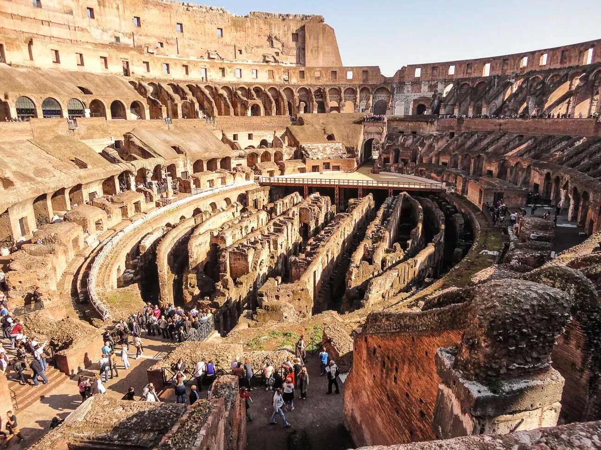
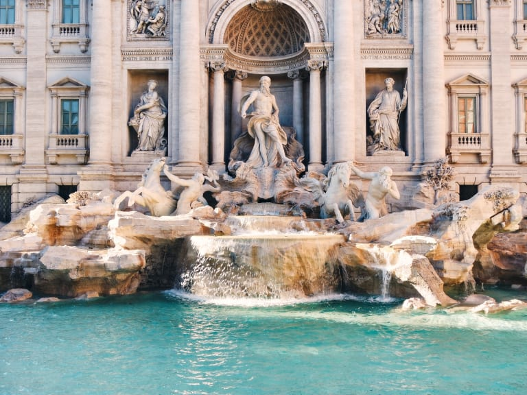
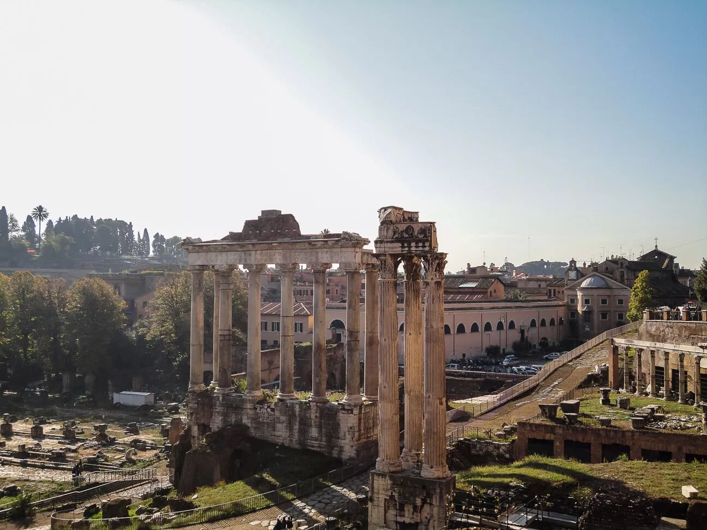
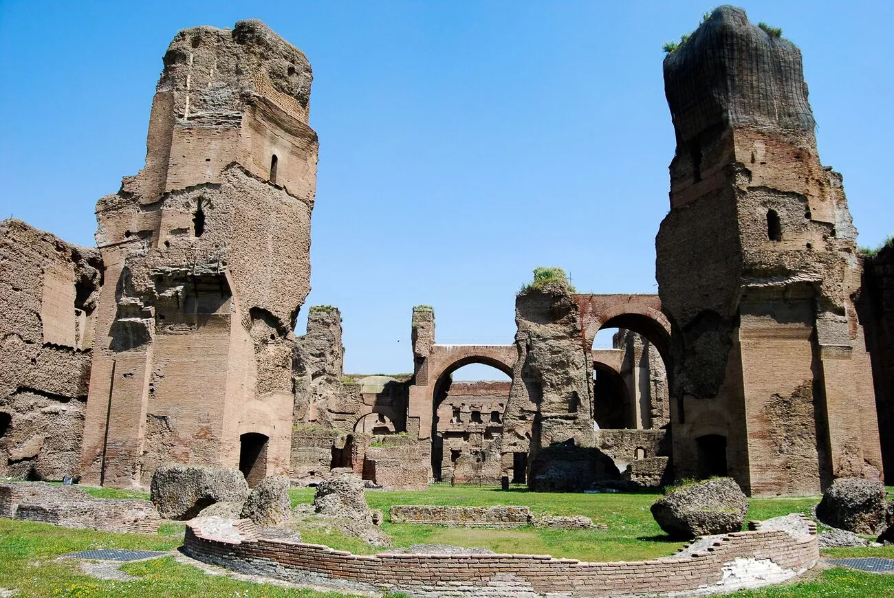
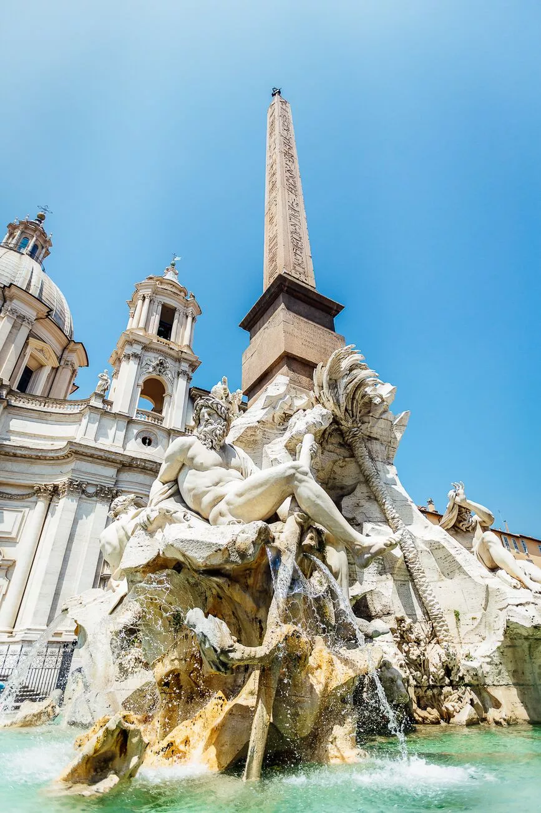

| MONUMENTOS |
DEFINICIÓN |
FOTO |
| CASTILLO SANT ANGELO |
Situado en la orilla derecha del Tíber, a poca distancia del
Vaticano
entre el rione de Borgo y el de Prati. Está unido a la Ciudad del Vaticano a través del
pasillo
fortificado denominado Passetto. El castillo ha sido modificado radicalmente varias veces en
las
épocas medieval y renacentista. |
 |
| COLISEO |
En este anfiteatro se dieron luchas de gladiadores, espectáculos de
caza de animales salvajes y un montón de barbaridades más. Tenía capacidad para 50.000
espectadores. |
 |
| FONTANA DI TREVI |
Con cerca de 40 metros de frente, es una de las mayores fuentes
monumentales de la Mitologia Romana. Según la actual división administrativa del centro de
Roma,
está situada en el rione de Trevi. La fuente está situada en el cruce de tres calles,
marcando
el punto del Aqua Virgo, , uno de los antiguos acueductos que suministraban agua a Roma.
|
 |
| EL FORO ROMANO |
Era el foro de la ciudad de Roma, es decir, la zona central
semejante
a las plazas centrales en las ciudades actuales donde se encuentran las instituciones de
gobierno, de mercado y religiosas. Al igual que hoy en día, era donde tenían lugar el
comercio,
los negocios, la prostitución, la religión y la administración de justicia. En él se situaba
el
hogar comunal. |
 |
| LAS CATACUMBAS DE ROMA |
Las catacumbas son galerías subterráneas que fueron utilizadas como
lugar de enterramiento durante varios siglos. La palabra catacumba, que viene a significar
"al
lado de la cantera", proviene del hecho de que las primeras excavaciones para ser u
tilizadas
como lugar de enterramiento fueron realizadas a las afueras de Roma, junto al terreno de una
cantera. |
 |
| PLAZA NAVONA |
Es uno de los espacios urbanos más destacados de Roma, que reúne
esculturas, fuentes y edificios de gran valor artístico y supone un centro de la vida
social,
cultural y turística de la ciudad. |
 |